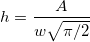
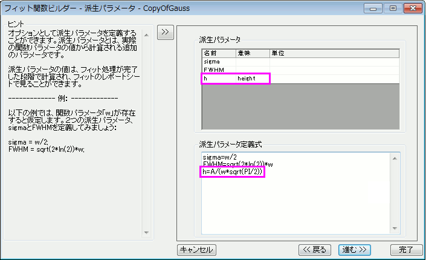

派生パラメータは、フィットパラメータを使って計算される追加のパラメータです。組み込み関数またはユーザ定義関数に対して自分自身の派生パラメータを定義することができます。
例えば、組込のガウス関数は、次の式でピーク部分をフィットします。
このとき、次式で計算できるピークの高さも調べるものとします。

最初に、フィット関数ビルダの変数とパラメータページに行き、派生パラメータ編集ボックスに派生パラメータの名前を入力します。 そして、派生パラメータページで派生パラメータの式を入力します。

フィットしたら、Originは高さを計算し、フィット結果ワークシートのパラメータテーブルに結果を含めます。
複数の派生パラメータを定義する必要があれば、カンマで区切ってください。さらに、派生パラメータは、他の派生パラメータから計算できません。これらの値は、フィット後に計算される値なので、Originは誤差の大きさについては分からず、派生パラメータの誤差を出力しません。